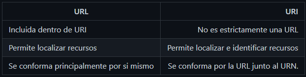

•Proxys
Es un tipo de servidor intermediario que se situa entre el equipo de un usuario y una direccion de internet que se quiere visitar. Redirige la conexion del usuario y enmascara su IP. Los proxys operan a nivel de aplicacion, es decir solo actua sobre un programa especifico y no en la totalidad de las conexiones, y solo redirigen el trafico de un programa, mientras que un BPN lo hacen a nivel de sistema operativo. Un proxy no encripta la conexion del usuario.
Ventajas
•Los equipos no tienen acceso al router, por lo que podemos permitir o denegar el acceso.
•Las paginas quedan guardadas en la cache del proxy.
•Se puede crear una lista de URL prohibidas.
•El proxy guarda informe de las paginas visitadas.
•El proxy funciona como cortafuegos.
•Proxies HTTP:
Tambien conocido como HTTP proxy, es un servicio que actua entre el cliente y el servidor dentro de una red de infraestructura.
Estan diseñados especificamente para su uso en webs. Pueden instalarse en un navegador para redirigir todo el trafico web a traves de proxy y proteger la IP.
Puede ser tan simple como el reenvio de trafico de los usuarios o tan complejo como intercambiar informacion entre el cliente y servidor, permitiendo inspeccionar y interacuar con solicitudes y respuestas para una mayor inteligencia de manejo de trafico y aceleracion de la web.
El cache es a menudo la pieza mas critica del software de un negocio basado en la web. Varnish cache es un HTTP proxy de codigo abierto. Varnish visita tu servidor una vez para almacenar el cache de la pagina, de ahi en adelante las siguientes solicitudes seran servidas por Varnish.
•Proxies SOCKS:
Los proxies SOCKS mas amplios que los Proxies HTTP, en el sentido de que pueden utilizarse tambien desde aplicaciones que no esten controladas por la web. Siguen funcionando a nivel de aplicacion.
•Proxies transparantes:
Estan diseñados para ser gestionados por un administrador y pasar desapercibidos por los usuarios. Se utilizan para monitorizar el trafico de la web. (Server proxy).
•HTTP
Protocolo de transferencia de hipertexto, es el protocolo de comunicacion que permite las transferencias de informacion a travez de archivos 'XHTML,HTML...' en la WWB. Es un protocolo sin estado, por lo que no guarda ninguna informacion sobre conexiones anteriores. El desarrollo de aplicaciones web necesita frecuentemente mantener estados, para esto se implementan las cookies, que son informacion que un servidor puede almacenar en el sistema cliente. Esto le permite a las aplicaciones web instituir la noción de sesión, y también permite rastrear usuarios, ya que las cookies pueden guardarse en el cliente por tiempo indeterminado.
Se describen los tipos de mensajes y distintas estructuras de los mensajes del protocolo HTTP/1.X y HTTP/2
Los mensajes HTTP son en texto plano, lo que lo hace mas legible y facil de depurar, pero haciendo los mensajes mas largos.
Estructura:
•Linea inicial:
Para las peticiones: la accion requerida por el servidor (metodo de peticion) seguido de la URL del recurso y la version de HTTP que soporta el cliente
Para las respuestas: La version del HTTP usado seguido del codigo de respuesta y de la frase asociada a dicho retorno.
•Cabecera del mensaje:
Las cabeceras del mensaje que terminan con una linea en blanco. Son metadatos. Estas cabeceras le dan gran flexibilidad al protocolo.
•Cuerpo del mensaje:
Es opcional. Su presencia depende de la linea anterior del mensaje y del tipo de recurso al que hace referencia la URL. tipicamente tiene los datos que se intercambian cliente y servidor.Metodos de peticion:
Get:
Solicita una representacion del recurso solicitado. Las peticiones que usan el metodo get solo deben recuperar datos.
Head:
Pide una respuests identica a la peticion del get, pero sin el cuerpo de la respuesta.
Post:
Se utiliza para enviar una entidad a un recurso especifico, causando a menudo un cambio de estado o efectos secundarios en el servidor.
Put:
Reemplaza todas las representaciones actuales del recurso de destino con la carga útil de la petición.
Delete:
Borra un recurso en específico.
Connect:
Establece un túnel hacia el servidor identificado por el recurso.
Options
Es utilizado para describir las opciones de comunicación para el recurso de destino.
Trace:
Realiza una prueba de bucle de retorno de mensaje a lo largo de la ruta al recurso de destino.
Patch:
Es utilizado para aplicar modificaciones parciales a un recurso.
URL vs URI
URI
El URI es el nombre unico con el que cada archivo se encuentra identificado a fin de ser encontrado rapidamente. Funciona como una direccion por la cual puede ser obtenido un recurso determinado.
URL
Es el nombre único que tiene cada recurso o medio disponible en internet a fin de poder encontrarlo, y puede ser un portal web, un video, una imagen e incluso un segmento de texto. A su vez, mediante este es posible obtener cierta información clave sobre los mismos. Por esto cada página web sitúa palabras claves en las direcciones de imágenes, videos o en el propio sitio a fin de que sea encontrado con facilidad, además de servir como el “nombre” de un recurso.
También se utiliza la URL como una pieza clave del funcionamiento de los motores de búsqueda, ya que estos encuentran las similitudes entre el texto introducido en la búsqueda y la dirección de una serie de páginas.
Funcionalidad de URI
El objetivo primordial del URI consiste en identificar un recurso específico de una manera única. Para ello son indispensables 2 elementos “scheme y path”, aunque en total un URI puede conformarse de 5 partes:
Scheme:
Establece las condiciones y el protocolo a utilizar.
Path:
Define la ruta exacta, pese a ser necesario el contenido del mismo, puede encontrarse vacío.
Authority:
Identifica el dominio en el cual se encuentra el contenido.
Query:
Este es un elemento que permite definir el recurso al que se desea acceder.
Fragment:
Señala una parte del recurso principal.
Tipos de URI
URI absoluto:
Está es la dirección más completa y detallada posible para un recurso. La misma debe conformarse por, al menos, 3 elementos de entre todos los que lo contiene, que deben ser scheme, authority y path, para que el URI sea funcional y pueda considerarse completo.
URI relativo:
Es una versión más simple y breve de acceder al mismo recurso. Este tipo de URI omite el fragmento “Scheme” pero cuenta con el resto de las partes de la dirección. Sin embargo, para que este sea funcional debe ser compatible con la estructura del URI de base.
Diferencias:
Una diferencia entre URL y URI es que el primero solo funciona como un localizador, indicando donde encontrar el elemento. Mientras que la URI permite tanto identificar como localizar cada recurso ya que dentro de esta se encuentra a su vez la URL, por lo que puede cumplir ambas funciones.
